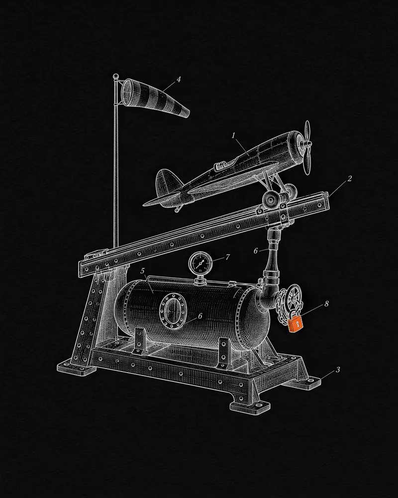

OpenServ · 2025 — 2026
Agent launches on Base
Putting AI agents and the startups built on them on-chain — launches on Base that graduate into locked Aerodrome liquidity and pay their builders on every trade.
- Role
- Head of Blockchain
- When
- August 2025 — March 2026
- Scope
- The Base launchpad on Aerodrome, live 21 January 2026
- Built with
- Solidity · ERC-20 · Base · bonding curves · Aerodrome · Slipstream concentrated liquidity · launch APIs

Context
OpenServ is a full-stack platform for building and operating autonomous AI agents, powered by the SERV token. Its pitch for 2026 was build, launch and run: create an agent or an AI-native startup on OpenServ, then give it a token and liquidity of its own.
OpenServ hired me from Eliza Labs as Head of Blockchain in August 2025. In the announcement I put the mandate simply: ship faster, harden the stack, and make building on OpenServ the easiest path for teams launching AI-powered apps.
The challenge
Agents and AI-native startups needed a way on-chain that didn’t end in a rug pull or a dead pool: liquidity that can’t be withdrawn, trading fees that flow back to builders and the protocol automatically, and a launch an agent can trigger itself through an API — instead of a multi-step DeFi setup done by hand.
What I did
- Led development of the Base side of OpenServ’s token launchpad, with Aerodrome as launch partner — live on 21 January 2026.
- Worked on the launch mechanics and fee flows: a bonding curve that graduates into Aerodrome at 10 ETH, liquidity locked for ten years, and swap fees routed automatically between project and protocol.
- On launch day the first project, $BETTER, went from token deployment through a full bonding curve to a live Aerodrome pool in 34 minutes.
How it works
- 01ConfigureThe founder sets metadata, vesting, the LP fee tier and launch time; a public project page goes live.
- 02DeployA fixed 1B-supply ERC-20 is minted on Base.
- 03CurveA bonding curve sells the public allocation at deterministic, on-chain prices.
- 04GraduateAt 10 ETH, liquidity migrates to Aerodrome automatically and the LP is locked for ten years.
- 05EarnEvery swap fee splits 67% to the project, 33% to the protocol — a quarter of that buying back SERV.
Agents could also launch through one API call: token, one-sided Aerodrome Slipstream pool, locked LP and half the fees back to the agent.
Launch day
Outcome
- 21 Jan2026 — the Base launchpad goes live
- 34 minfrom first deployment to a live Aerodrome pool
- 10 ETHgraduation threshold into Aerodrome
- 10 yrsliquidity lock on graduated pools
- 67 / 33swap-fee split, project / protocol
- 1 callfor an agent to launch its own token on Base
After I left in March 2026, OpenServ opened the launchpad to everyone and added Solana — the mechanics on this page are the Base version I worked on.
“Joey has shipped at a pace and quality most teams struggle to match. […] He’s the execution engine we want driving our blockchain roadmap.”
Sources
- OpenServ names Joey Kheireddine Head of BlockchainThe Block (Chainwire) · Aug 2025 ↗
- “Introducing the SERV Launchpad … Autonomous startups have arrived on Base”OpenServ · X · Jan 2026 ↗
- SERV Launch Day GuideOpenServ · X · Jan 2026 ↗
- Token launch mechanics: bonding curve, graduation, LP lock, feesOpenServ docs (archived) ↗
- Agent launches on AerodromeOpenServ docs (archived, Feb 2026) ↗
- Launchpad record for $BETTER: launch and graduation timesOpenServ API (archived) ↗
- BETTER / WETH pool on AerodromeGeckoTerminal ↗
- Agent launch reference: one-sided Slipstream liquidity, LP lockGitHub ↗